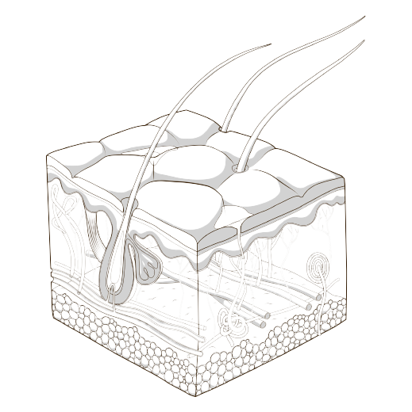

SKIN PHYSIOLOGY
從皮膚生理結構、顏面五官比例-
打造你心裡的眉型

有句話說：眼睛是靈魂之窗，那眉眼就是不可忽視的那張簾。
對吹毛求美的人兒來說，不會去在意研究你的窗戶的結構、氣密程度如何。但是我們會精心去挑選窗簾，配色、材質、光線灑落下來的透光感、窗外看進屋內的透視感、屋主的神秘感。
保有神秘吸引力，從窗外看進妳靈魂深處的關鍵就是眉眼。但美不是單只靠感覺，純淨一直以來，創造美的專業感，從美到醫美、從黃金比例到皮膚生理。在專業上怎麼使用黃金比例尺，把你的臉蛋分成幾等分、眉型要怎樣才能有型，你的一頻一笑的臉部肌肉紋理，要怎麼牽動靈魂，這些都是我們非常在意的小事！
文字表述不夠有臨場張力，歡迎立即和我們預約聊聊！
GOLDEN RATIO
美不能只憑感覺-
讓黃金比例尺來
美感不是信手拈來的，但我們還可以仰賴專業的工具作更精細的眉毛，讓職人手藝得以發揮！
純淨專用·業界獨創的-黃金比例尺，從你的臉皮厚薄、額頭眼睛位置、臉蛋整個骨骼肌肉分佈開始定位，能讓你的眉型更俐落、定位更明確，用黃金比例尺打造絕佳平衡亮眼的眉型。
SARA BEAUTY
不珍惜是因為-
更珍惜你的臉
我們不珍惜個人專用備品，因為標榜個人使用，所以日系妝感就霧眉採用日本職人專用調色的進口植物色乳，色澤自然不變色，一人一袋乾淨衛生、無久放變質的可能。
另外sara是來自於德國的品牌，通過ResAP(2008)歐盟認證，採用先進的奈米技術製作而成，分子比普通色料分子小，確保著色更快更穩定，我們堅持給您最好的。
不珍惜備品，是因為我們更珍惜你的臉！
Price
價目表
EYEBROW
眉
以上服務四個月內皆贈送第二次微調，第二次調整後的12個月內補色半價
EYE
眼